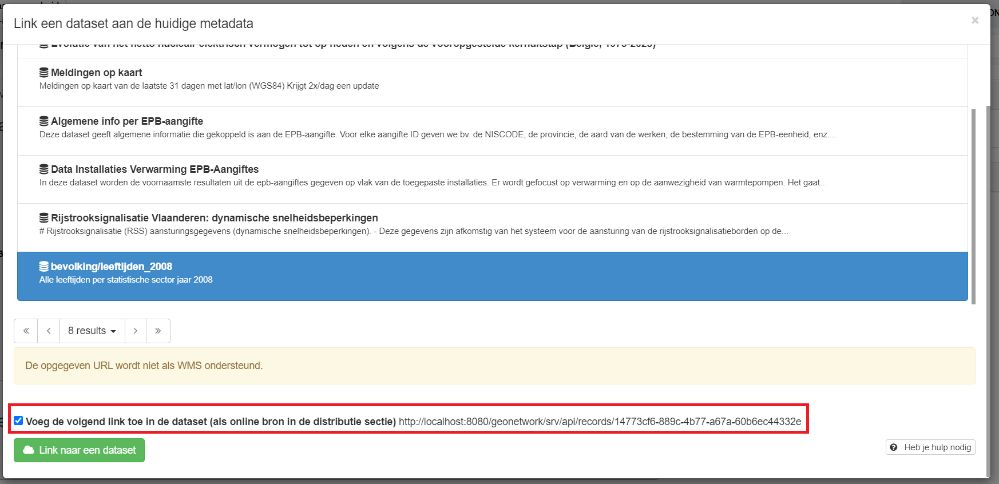

Summary
Changelog
See also Main changelog
- Fix missing dct:Location wrapper element
- Fix missing "root" prop for native metadata in the database
- Implement caching for converted RDF metadata for better performances
- Include patch on Taxonomy indexing memory leak #PR 4482
- Add total relation count in relation API response to enable efficient paging
- GeoDCAT: Implement mapping for service types and service categories
- GeoDCAT: Fix typo in "dct:creator/@rdf:resoure" attribute name
- GeoDCAT: Implement mapping of keywords to subproperties of dct:subject:
http://vocab.belgif.be/auth/datatheme dcat:theme https://inspire.ec.europa.eu/metadata-codelist/TopicCategory mdcat:ISO-categorie https://inspire.ec.europa.eu/theme mdcat:INSPIRE-thema http://www.eionet.europa.eu/gemet mdcat:GEMET-concept https://data.vlaanderen.be/id/conceptscheme/MAGDA-categorie mdcat:MAGDA-categorie Other dct:subject - Fix un-editable service
dct:license/dct:LicenseDocument/dct:typethesaurus value - GeoDCAT: Implement mapping of status progress code to
mdcat:status(sub-property ofadms:status)
- Fix impossible to delete distribution licence block in DCAT2 editor
- Fix some issues in the mapping
- Add GeoNetwork homepage link to the
dcat:Catalog/foaf:homepage/foaf:Document/@rdf:aboutattribute - Create the
dct:creatorofdcat:CatalogRecord/adms:identifierdynamically based on the current node - Change
dcat:landingPagetomdcat:landingpageVoorBronMetadata - Fix typo in license type
- Fix hard line returns in some license description
- Move all elements namespaces on the root element
- Fix character encoding in hydra paging URL's query param
- Add GeoNetwork homepage link to the
- Fix un-editable dct:rightsHolder/dct:type concept
- Fix Dataset and DataService indexed under standardName
- Fix record section sometimes empty in dcat2 metadata view
- Standard name and description of harvested metadata catalog record would sometimes be empty
- Fix duplicated amds:identifier in RDF output of some dcat2 native records
- Add protocol mapping for services conformsTo based on distribution gmd:protocol
- Only map one distribution per transfer option when the protocol is not one of the following
- WWW:DOWNLOAD-1.0-ftp—download
- WWW:DOWNLOAD-1.0-http--download
- LINK download-store
- Map
OGC:OGC-API-Featuresprotocols for dataset distributions - Fix missing reference to the dcat:CatalogRecord, dcat:Dataset and dcat:DataService in the RDF when exporting single record via the user interface ("/dut/rdf.metadata.get" API)
- Remove max cardinality validation rule on statuut for dcat-ap-vl
- Add configurable admin settings for the catalog organization e-mail and URL
- GeoDCAT: Add mapping for
OGC:OGC-API-Features-landingpageandOGC:OGC-API-Features-itemsprotocols
- Fix issue where thumbnails could not be uploaded or deleted
- Fix issue where RDF export would crash in case multiple feature catalog was present in the ISO-19139 metadata
- Create separated changelog files for BETA and PROD environment
- GeoDCAT:
- Map gmd:EX_GeographicBoundingBox to dct:spatial/dcat:bbox
- Fig wrong SpatialRepresentationType URL for adms:representationTechnique
- gmd:resourceConstraints: Only map gmd:MD_LegalConstraints and gmd:MD_SecurityConstraints to dct:rights
- Correctly use the native dataset UUID and URI when available and have the correct syntax
- Fix dct:spatial GML encoding
- Update dcat:Catalog contact and publisher informations
- Map original record view to mdcat:landingpageVoorBronMetadata instead of parent property dcat:landingPage
- Fix validation on keyword unique language
- GeoDCAT conversion: prevent some fields from being created with empty values
- Rename schematron with smaller filename (no functional impacts)
- Prevent multiple dataset dct:identifier when gmd:identifier not UUID conform
- Add
dct:creator/@rdf:resource="https://metadata.vlaanderen.be"on adms:identifier - Remove timezone from Date type fields. The timezone is only added for DateTime
- Map distribution protocol to codelist
- Fix wrong type and missing
rdf:aboutattribute on feature catalogdct:conformsTomapped element - Add lineage metadata view and implement
dct:provenanceGeoDCAT mapping - Add
dct:identifieranddcat:contactPointon the catalog level - Improve RDF export performance
- Make validation on dcat:theme recommended instead of required for Dcat-ap-vl profile
- Add format and accessRights to the relation API output
- Hide dcat:accessService field from default editor view
- Improve linking between dataset and service: dcat:accessService is not needed anymore to define a link from dataset to service
- Remove useless thesauri for DCAT2 records from editor
- Update GeoDCAT mapping after review of Overviewdcat3.xlsx
- Remove
dcat:themeTaxonomyon dcat:Catalog level from the RDF output - Remove
dct:issuedanddct:modifiedon dcat:Catalog level from the RDF output due to them being fixed values with no real meaning - Add timezones to dates values
- Add dct:identifier and rdf:about on dcat:Distribution element
- Remove CRS mapping for services records
- Migrate existing distribution to add an identifier
- Remove
- Add dataOrgName facet to the suggest API
- Add notation to the Spatial Representation type
- Update schematron
- Change the workflow configuration to use the Metadata Vlaanderen workflow process
- Ensure the
dcat:CatalogRecordstandard name has the correct format - Update distribution mapping
- Add linkage information in relation API
- Fix
adms:representationTechniquenot being mapped correctly. - Fix dcat view: Show the URI of a publisher even when no other info are provided.
- Fix indexing and GeoDCAT mapping of the access rights for ISO-193139 records with the new label
- Implement various dct:subject thesauri in metadata editor
- Change startDate & endDate namespace
- Change the profile title to always be in lower case letters:
- Geodcat-ap-vl
- Metadata-dcat
- Dcat-ap-vl
- GeoDCAT mapping: Add
dct:sourceon the dcat:CatalogRecord level linking to the original ISO-19139 metadata XML as well asdcat:landingPageon the dcat:CatalogRecord and dcat:Resource levels linking to the original metadata view
- Fix duplicated
geodcat:distributorin some RDF exported ISO19139 metadata - GeoDCAt: Move adms:representationTechnique to dcat:Dataset level
- Replace schematron DCAT validation with shematron automatically generated from the SHACL spec
- Fix dcat:distribution impossible to delete
- Update access rights thesauri labels and change indexing to index label value for public / non public access right instead of technical name
- Create separated access rights thesaurus with different labels for services
- Fix foaf:isPrimaryTopicOf resource link for dcat:themeTaxonomy
- Hide RDF export button from UI for Feature catalog and Dataset series records
- Add dct:rightsHolder to schema and change cardinality in GeoDCAT conversion
- Add csv logfile for dcat harvesters
- Add new queryable index field "isOpenData" containing "y" if the metadata contain the GDI-trefworden "Vlaamse Open data" or "Vlaamse Open data service" else contains "n"
- Add "accessRights" facet to the search page.
- Fix metadata publishing process:
- When the workflow is disabled for the metadata group owner:
- If the metadata doesn't have the workflow activated: the publish / unpublish buttons are shown
- If the metadata have the workflow activated (by a previous action), it remains as is
- When the workflow is enabled for the metadata group owner:
- When creating a metadata, the workflow is activated automatically
- If the metadata exists, the publish button is not shown. Instead, a button to activate the workflow is shown. Activating to workflow on a non-public metadata will set the status to "Draft". Activating the workflow on a public metadata will set the status to "Intern goedgekeurd en gepubliceerd"
- If the metadata have to workflow activated, it remains as is
- When the workflow is disabled for the metadata group owner:
- Make DCAT metadata identifier searchable in the global search field
- Add dcat:theme and dct:subject to keyword index field
- Fix broken RDF export on SQL server instances
- GeoDCAT conversion:
- Conformity: Use versioned URI for DCAT profile conformity
- Conformity for dataset: map feature catalog (content info)
- Fix relation between ISO and DCAT records not mapped
- Add the rdf:datatype attribute on the various locn:geometry format
- Fix duplicated stakeholders elements (publisher, contact point, distributor, ...) in the RDF output with API
- Fix issue when resource identifier in ISO is already a URI
- Fix missing information about link from Dataset to Service from the metadata view
- Enforce harvested metadata default keywords language to "nl"
- Add an option on CSW and GeoNetwork harvesters to define a URI build pattern. This pattern is used during the RDF export to generate the metadata dcat:CatalogRecord, dcat:Dataset and dcat:DataService @rdf:about URI of metadata coming from harvested sources.
- Execute migration script on DEV to fix keywords with missing language tags and dcat:Dataset with missing @rdf:about
- Update ISO-19139 to GeoDCAT conversion
- The link from DataService to Dataset (dcat:servesDataset) now correctly use the dataset's URI
- Remove dct:language from the dcat:Catalog level
- Remove unused XML namespaces in the RDF output
- Change dcat:themeTaxonomy foaf:isPrimaryTopicOf to contains a link to download the thesaurus
- Enable status workflow and draft copy for DCAT records (same as what is done for ISO 19139 metadata)
- Improve DCAT records view header to display the description, resource type (with an icon before the title), owner and workflow status. Notes: the owner and the status are only shown for logged-in users.
- Update ISO-19139 to GeoDCAT conversion
- Always set mdcat:levensfase value to "live" for services
- Fix issue where harvester would sometime duplicate the skos:prefLabel of concepts resulting in an index error
- Update ISO-19139 to GeoDCAT conversion
- The related services are now mapped to dct:relation of datasets
- Move geodcat:distributor from dcat:Dataset level to dcat:Distribution level
- Always set mdcat:ontwikkelingstoestand value to "production" for services
- locn:address is now also used alongside with vcard:hasAddress for contact information
- Remove CDATA section for locn:geometry
- Add missing index field "fileId" for object catalogs metadata
- Update ISO 19139 to GeoDCAT conversion
- Add missing NL translation for JurisdictionWithinTheEU license
- Prevent duplicated dct:endpointUrl and dct:endpointDescription
- foaf:Agent/foaf:name is now only mapped from gmd:organisationName. Mapping with gmd:individualName is removed
- Dataset dct:accessRights moved from dcat:Distribution level to dcat:Dataset
- Map resources constraints other than model licences to dct:rights
- Fix missing default language tag when adding dcat:keyword
- Fix on dct:Standard for reference system info: rdf:resource attribute was used instead of rdf:about
- Update DCAT2 harvester:
- When the CatalogRecord identifier is considered weak, a new UUID is generate based on a combination of the Catalog identifier and the existing CatalogRecord identifier (previously, only the CatalogRecord identifier was used which could cause conflict across different Catalog)
- If the resource (dataset or service) dct:identifier is considered weak, it is moved to a adms:identifier and a new dct:identifier is generated by combining the Catalog identifier and the weak resource identifier
- Fix search on file identifier for dcat2 records
- Fix an issue where it was impossible to add dct:language, dct:format, dct:mediaType and other thesaurus distribution elements when presence of multiple distributions in the dataset
- Add missing "adms:versionNotes" element in XSD for DataService
- Fix HTTP 5xx error when requesting a RDF of a DCAT record without rdf:about attribute on the resource
- ISO-19139 to GeoDCAT mapping: Map gmd:edition to owl:versionInfo
- The index value for
lifeCyclefield is set to "live" for all ISO 19139 services metadata - Update ISO19139 to GeoDCAT conversion:
- Add
adms:identifierelement - Map
gmd:referenceSystemInfotodct:conformsTo - Map
gmd:alternateTitletodcat:keyword - Always set
dcat:CatalogRecord/dct:conformsTovalue to "GeoDCAT-AP-VL" - Map complete license description and details for known licenses instead of only mapping to license URI
- For services: Map
srv:containsOperationsto dcat:endpointUrl - For services: Map
gmd:transferOptions//gmd:linkageto dcat:endpointDescription - Prevent duplicated
dcat:DataServices/dct:conformsTowhen multiplegmd:transferOptionswith the same protocol is present
- Add
- Fix ISO19139 to GeoDCAT conversion
- Only gmd:pointOfContact responsible party were used to generate GeoDCAT stakeholders. Now, all the gmd:CI_ResponsibleParty are used
- Prevent duplicated dcat:theme when there is 2 or more TopicCategories leading to the same data.gov-theme
- Rename facet
vlStatustostatute
- Add levensfase to the facet:
lifeCycle - Add ontwikkelingstoestand to the facet:
developmentState - Integrate community thesauri keywords pickers to replace current custom-made pickers in editor
- Fix recommended Keyword validation issue
- Fix issue where harvested metadata are sometimes not viewable on the harvester node side
- Add contact in facet:
dataOwner,dataDistributor,dataContactPoint,dataPublisher(Note: the previously existing facets "recordOwner" and "owner" contain information about the actual GeoNetwork editor of the metadata) - Add organization in facet
dataOrgNamethat contains the organization name no matter the role - Fix validation: Distribution was mandatory for metadata-dcat but should be optional
- Add 'Statuut' to the facet under the name "vlStatus". Contains the following values:
- Toegevoegd GDI-Vl
- Lijst M&R INSPIRE
- Metadata GDI-Vl-conform
- Fix timezone issue
- Add revision date, create date, publication date and access rights values to the metadata index detail
- GeoDCAT conversion: Map topic category to dcat:theme data gov vocabulary
- Translate license types vocabulary
- Index the following fields for ISO 19139 metadata
- Access Rights (publiek/niet publiek)
- License
- Mapped ISO topic category to data.gov theme
- Fix harvester: dcat:accessService was lost during the harvesting
- Fix sometimes duplicated dct:accessRights in ISO19139 to GeoDCAT RDF export
- MVP: Imlement ISO19139 to GeoDCAT conversion
- Add new facet resultType containing all possible facets values: "all"
Exemple URL: https://dev.metadata.vlaanderen.be/srv/dut/q?_content_type=json&fast=index&from=1&to=20&resultType=all - Add facets for elements:
dct:accessRights accessRights dct:license title license dcat:theme and iso data.gov keywords dataGovKeyword
- Fix accessURL cardinalities
- Distribution elements are re-ordered upon saving the editor
- WIP: Implement ISO19139 to GeoDCAT conversion
- Fix issue where the mdcat element where not correctly harvested along with the dct:subject
- Fix record and resource UUID and rdf:about handling. Make it more robust when importing, duplicating and editing a metadata
- The dct:identifier of a dct:LicenseDocument is now automatically set based on the license document URI and does not appears as a field in the editor default vue
- Fix typo
- Implement the RDF export for DCAT native metadata (datasets and services)
- Fix Issues with DCAT harvester
- Fix dcat:endpointDescription validation issue
- When missing, the required "mailto:" prefix on vcard:hasEmail element is now automatically added to the XML when saving, before any validation
- Fix bug where an XSD validation error would sometimes occurs when saving and quiting the editor causing a metadata to be invalid and unpublished
- Add the services mdcat extension elements to the Open DCAT editor
- Add dct:subject element to the XSD
- Define the "GDI-Vlaanderen-trefwoorden" vocabulary for the dct:subject element (WIP: Multiple thesauri should be accepted in dct:subject. It is only the case for "GDI-Vlaanderen-trefwoorden" currently)
- Automatically add the "Vlaamse Open data" keyword as a dct:subject when editing a dcat-ap-vl metadata
- Improve dcat-ap-vl validation rules and update metadata-dcat validation with latest changes
- When linking a dataset to a service, the services list to pick from is now filtered to only display downloadable services
- Fix ContactPoint cardinality for dcat:Dataset
- Add dct:rights to default editor view
- Apply schematron validation rules based on the record profile
- Hide profile specific extension fields from editor when template profile doesn't match
- Add templates for DCAT-AP VL records
- Add validation rules specific to DCAT-AP VL records
- Enforce "Vlaamse Open Data" dcat:theme on DCAT-AP VL records. (WIP: There is still no way of selecting themes from another vocabulary. data.gov.be theme are still the only one that can be manually selected)
- Update indexing to index the "Vlaamse Open Data" dcat:theme as a GDI-Vlaanderen trefwoord
- Modify index: dcat:CatalogRecord/dct:conformTo is now indexed under standardName field
- During import, generate a dcat:record if missing and correctly handle UUID if dcat:record present
- DCAT harvester is now capable of harvesting feed that does not provide dcat:CatalogRecord element
- Update metadata-dcat schema cardinalities
- Add dcat:CatalogRecord element
- Change metadata identifier to use the CatalogRecord identifier
- Change the metadata modified date to use the CatalogRecord identifier
- Update DCAT harvester to harvest DataServices
- Update DCAT harvester to harvest CatalogRecord (Still TODO: Datasets and services without a CatalogRecord in the harvested feed are currently ignored)
- Implement link from dataset to service
- Renamed the two templates to "Sjabloon voor metadata-dcat van Dataset" and "Sjabloon voor metadata-dcat van Service"
- The "Vlaamse Open data" keyword is no longer automatically added for dataset metadata. If present, it will still be reformatted to be strictly equal to "Vlaamse Open data"
- Remove the default title when creating a service from the template
- Improved external linked dataset on services
- Remove wettelijkeBeperkingen and doelpopulatie elements
- Rename XML namespace from
mvstomdcat - Rename elements:
authenticatie landingspaginaVoorAuthenticatie dienstverleningsKwaliteit landingspaginaVoorStatusinformatie gebruiksbepaling landingspaginaVoorGebruiksinformatie statusVanGebruik levensfase statusVanOntwikkeling ontwikkelingstoestand - Update the DataService fields labels in the view and the editor according to the metadata-dcat applicatieprofiel
- Move landingspaginaVoorAuthenticatie, landingspaginaVoorStatusinformatie, landingspaginaVoorGebruiksinformatie from the service information section to the usage information section
- Renamed schematron validation rules set. We now have the three following schematrons:
schematron-rules-dcat-ap Mandatory rules for dcat-ap 2.0 schematron-rules-dcat-ap-recommendations Recommended rules for dcat-ap 2.0 schematron-rules-metadata-dcat Mandatory rules metadata-dcat
Notes: No changes to the validation rule implementations have yet been made - Fix issue where, sometimes, the wrong label was used
- dcat:DataService/dct:accessRight added to the default view of the editor and with default value "public" in the template
- Thesauri for
mdcat:levensfaseandmdcat:ontwikkelingstoestandhave been updated to point to their correct new scheme:
- Display external linked dataset in the editor's and the view's sidebar
- All the optional fields for dcat:Dataset, dcat:Distribution and dcat:DataService added to the metadata-dcat schema in the release of 02/02/2021 are now also editable in the full view of the editor and viewable in the metadata view
- Added a plus button to add empty dcat:servesDataset
- Added a shortcut button bellow the dcat:servesDataset field to link to a dataset
- Fixed dcat:endpointDescription type from string literal to rdf:Resource
- Added schematron rule 300, 301, 302, 303, 350, 351, 352 for dcat services metadata
- Remove dct:license from dcat:Dataset XSD
- Fixed advanced view in editor for services metadata
- "Vlaamse Open data" keyword is no longer automatically added for services metadata
- Fixed cardinality for fields dct:title, dct:description, dcat:endpointUrl and dcat:endpointDescription
- Change "Straat" label to "Straat en huisnummer"
- Added support for dcat-ap 2.0 Resource abstract class fields and new distribution's fields. These
fields are
not editable nor viewable but have been added for dcat-ap 2.0 compliance and can exist in the
metadata XML:
- dcat:Catalog
- dcat:contactPoint
- dcat:keyword
- dcat:landingPage
- dcat:qualifiedRelation
- dcat:theme
- dct:accessRights
- dct:conformsTo
- dct:creator
- dct:identifier
- dct:isReferencedBy
- dct:relation
- dct:type
- dcat:Dataset
- dcat:qualifiedRelation
- dct:creator
- dct:isReferencedBy
- dct:license
- dct:rights
- dcat:Distribution
- dcat:compressFormat
- dcat:packageFormat
- dcat:spatialResolutionInMeters
- dcat:temporalResolution
- dcat:DataService
- dcat:qualifiedRelation
- dcat:theme
- dct:accessRights
- dct:conformsTo
- dct:creator
- dct:isReferencedBy
- dct:issued
- dct:license
- dct:modified
- dct:relation
- dct:rights
- dct:type
- dcat:Catalog
- Renamed plugin from "dcat-ap-for-servives" to "metadata-dcat"
- Updated with latest changes done on dcat-ap v1.2 plugin
- Changed XML namespace from
http://data.vlaanderen.be/ns/metadata-dcat#tohttp://data.vlaanderen.be/ns/metadata-dcat# - Added two new thesauri for mvs:statusVanGebruik and mvs:statusVanOntwikkeling and update editor to use them
- Added dct:publisher in services metadata schema and make it editable and viewable
- Updated service's fields with latest cardinalities
- Slightly improved changelog's readability
- Added the field dcat:accessService to dataset distribution
- Modified view to display the content of dcat:accessService as a clickable link and added translations
- Updated the dcat-ap plugin and the core with the latest changes of the dcat-ap 1.2 branch
- When linking a dataset to a service, we now can also modify the linked dataset with the URL of the
service
in
the mean time:

- Fixed a file encoding issue
- Added changelog page
- Added link to the changelog page in the top toolbar
- Added the namespace <http://data.vlaanderen.be/ns/metadata-dcat#> to the dcat-ap plugin
- Added the new elements to the schema and makes them viewable and editable in the new section
"Service
informatie"
- mvs:authenticatie
- mvs:dienstverleningsKwaliteit
- mvs:doelpopulatie
- mvs:gebruiksbepaling
- mvs:statusVanGebruik
- mvs:statusVanOntwikkeling
- mvs:wettelijkeBeperkingen
- Added translations and tooltips for these new fields
- Fixed a bug where a dct:identifier was added when clicking on the + button to add a keyword
- Fixing few translations: labels sometimes starting with lower case, sometime with upper-case => All changed to upper-case
- Fixed a bug where the content of vcard:hasUrl was edited instead of the vcard:hasUrl/@rdf:resource attribute
- Better indexing for the services metadata for fields
- dcat:servesDataset
- dcat:endpointUrl
- dcat:endpointDescription
- dcat:landingPage
- Improve view:
- dcat:endpointDescription is now displayed. If it contains links, they will be clickable
- Added missing translations for the side bar
- Fixed styles for nested tables
- Update schematron rules to prevent error when editing a services (error of type "dcat:dataset is a required property…") allowing to have valid service records
- Added schematron validation rules for
- dcat:endpointUrl
- dcat:DataService/dcat:contactPoint
- dcat:servesDataset
- dcat:landingPage
- Added the @rdf:about attributes on dcat:DataService schema and handle it when creating a new service record
- New elements have been added to the XSD and the editor. Here is the list of all the editable fields
for
dcat-ap services metadata:
- dct:identifier
- dct:title
- dct:description
- dcat:endpointUrl
- dcat:endpointDescription
- dcat:servesDataset
- dcat:landingPage
- dcat:contactPoint
- dcat:keyword
- dct:language
- owl:versionInfo
- Translations have been fixed for existing fields and added for the new ones
- We can now couple a dataset to a service via the search box. Doing so will add a new
dcat:servesDataset
element pointing at the dataset. (Please notice that this must be done by clicking the first "Link
naar een
dataset" button in the dropdown of the "Toevoegen" button. The two others button in this dropdown
must be
evaluated and maybe removed).

- The coupled dataset will be displayed in the editor and in the view as a related dataset (on the right side bar)
- The title and the description of services are now displayed in the search and view pages (instead of a blank lines). The rest of the view was not changed yet; which mean that some field might be missing from the view.
- Modified the template for services to add the new elements. However, this is not necessary to recreate existing metadata from this template. The new elements can be added via the + button in the editor.